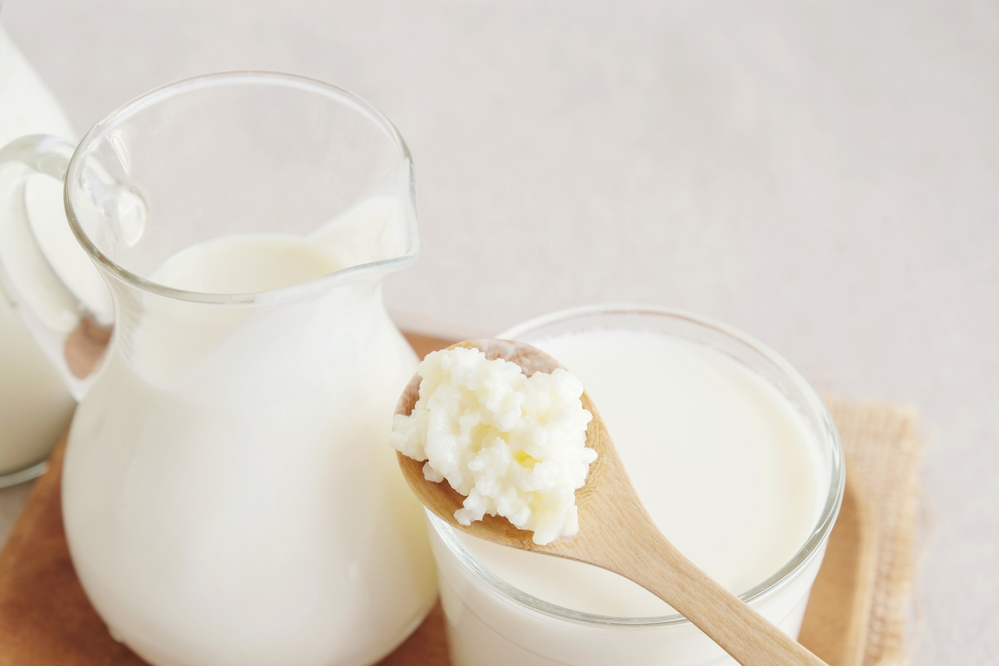
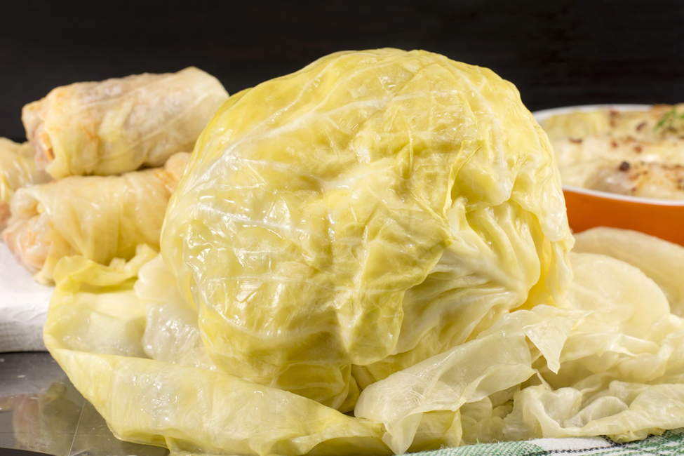
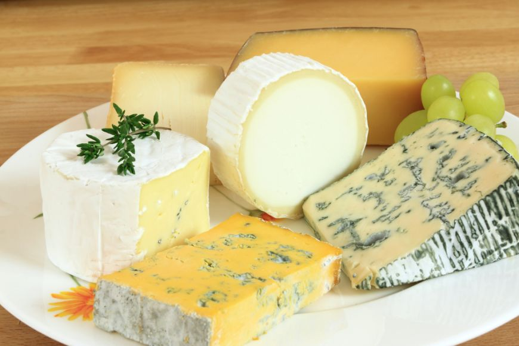
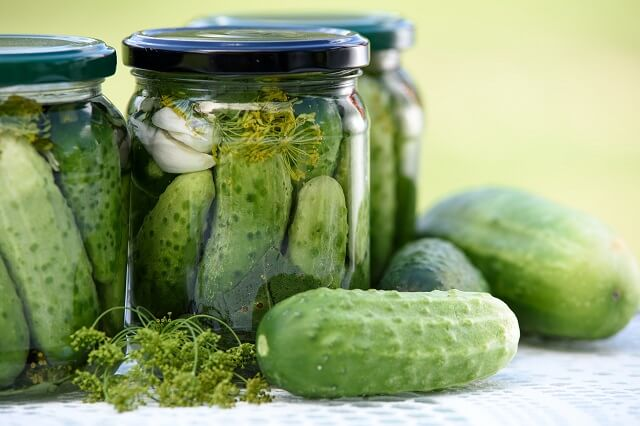
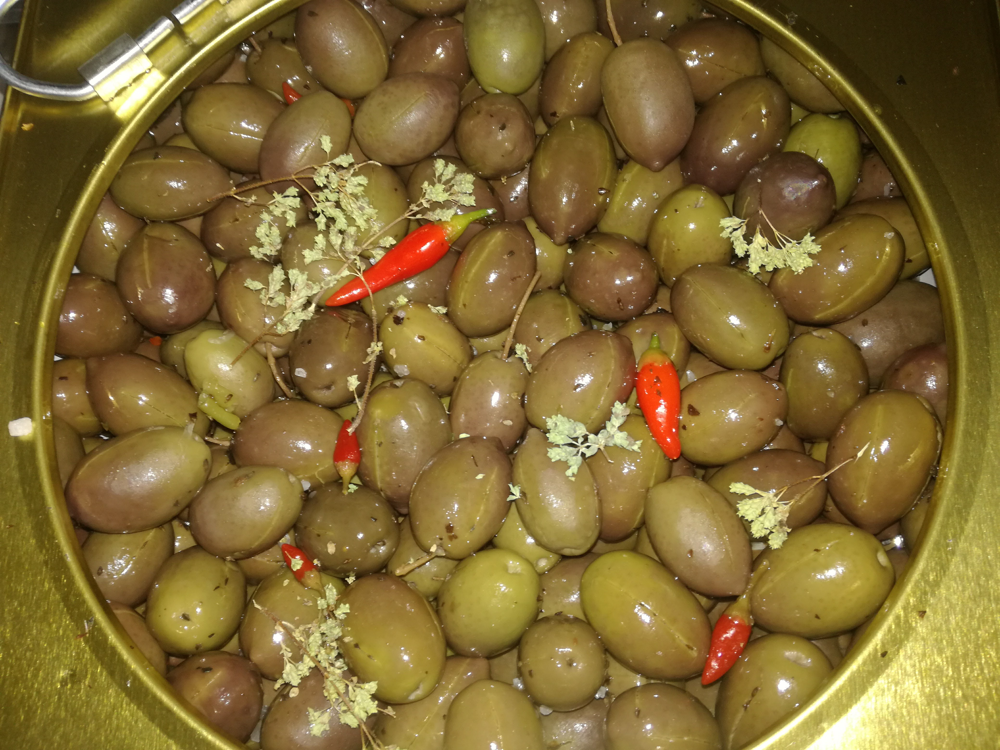
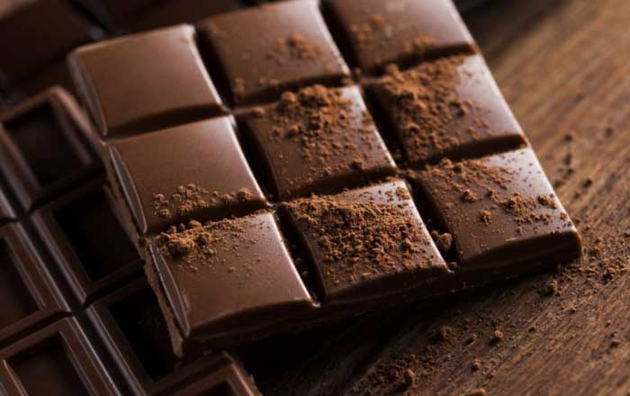
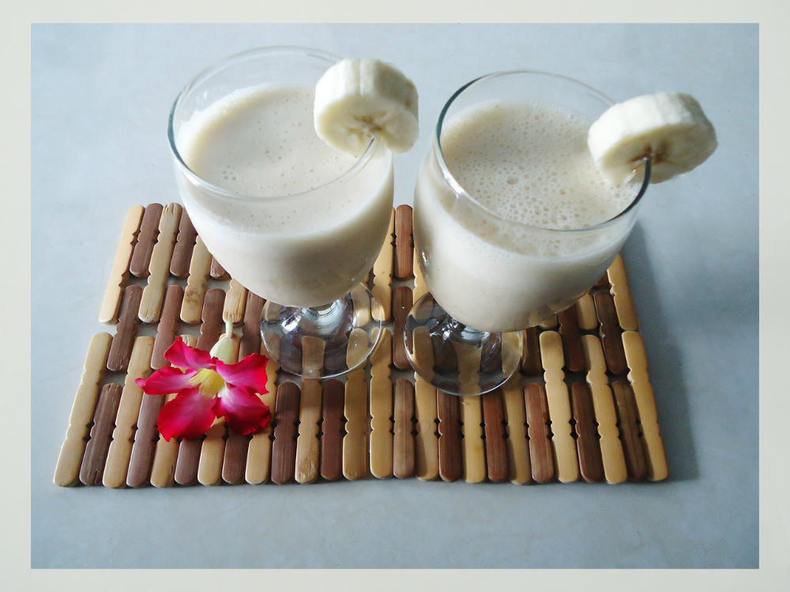
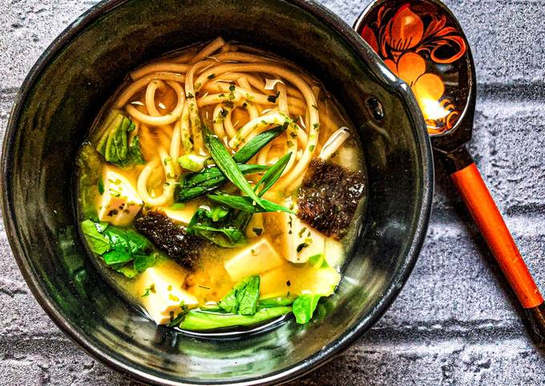

Dieta ta conține suficiente alimente bogate în probiotice? Acestea sunt niște microorganisme benefice care populează intestinele noastre și care ajută organismul nostru în nenumărate moduri, de la procesul de digestie la absorbția substanțelor nutritive și până la susținerea sistemului imunitar.
Există de asemenea studii care sugerează că lipsa de probiotice din intestine poate duce la diverse probleme de sănătate precum balonare, gaze, sindrom de colon iritabil, acnee, eczeme. Conform unor studii, înmulțirea excesivă a anumitor bacterii nocive la nivelul colonului poate duce la cancer de colon.
Prin urmare, este important să ne menținem echilibrul florei intestinale (sau ceea ce se numește microbiom), astfel încât să existe mereu un număr suficient de mare de bacterii benefice care la rândul lor împiedică dezvoltarea excesivă a bacteriilor nocive. Flora intestinală este însă semnificativ influențată de alimentația noastră, de medicamentele pe care le luăm, de nivelul de stres și de diverși alți factori legați de stilul nostru de viață.
Cel mai simplu mod de a ne asigura un bun echilibru al florei intestinale este însă prin alimentație. Pe lângă consumul unei diete bogată în fructe și legume proaspete și săracă în zaharuri și alimente procesate, există un număr de alimente care pot fi considerate surse naturale de probiotice pe care le putem include în dieta noastră zilnică pentru a ne asigura că bacteriile „prietenoase” de la nivel intestinal sunt în număr optim.
Iată care sunt top 10 alimente ce conțin probiotice pe care ar fi indicat să le consumi cât mai des:
Acest aliment vechi de sute de ani este făcut din mere zdrobite, distilate și fermentate. Este consumat adesea pentru a ajuta la slăbit și la scăderea tensiunii sangvine, dar, fiind un aliment fermentat, are și un conținut ridicat de probiotice.
Pentru a te asigura de acest lucru, cumpără oțet de mere crud, nefiltrat, de preferat organic. Vei constata că lichidul nu e perfect limpede, ci are o consistență ușor lăptoasă, aceasta fiind o dovadă a conținutului de enzime proteice și probiotice care pot contribui la sănătatea sistemului tău digestiv.
2. Kefir Această băutură înrudită cu iaurtul este obținută din lapte fermentat. Studiile arată că poate contribui la susținerea sistemului imunitar prin prevenirea dezvoltării bacteriilor nocive precum E. coli.
Kefirul este consumat de peste 3000 de ani și poate conține între 10 și 34 de tulpini de probiotice diferite. Deși similar iaurtului, fiind fermentat cu ajutorul drojdiilor și a unei cantități mai mari de bacterii, kefirul este mai bogat în probiotice și are un conținut mai scăzut de lactoză.
3. Varza murată Procesul prin care se obține varza murară este unul de fermentare care duce la apariția de probiotice și de asemenea a unui conținut ridicat de acizi organici care susțin dezvoltarea de bacterii benefice.
Varza murată reprezintă o bună sursă de probiotice precum Lactobacillus, enzime digestive și vitamina C. Pentru a te bucura de acestea, ai putea adăuga de câteva ori pe săptămână o salată de varză murată la dieta ta.
4. Unele tipuri de brânză Brânza crudă, nepasteurizată de vaci îți poate oferi o cantitate ridicată de probiotice benefice pentru sănătatea ta, cum ar fi cele din gama Acidophillus, Bulgaricus, Bifidus sau Thermophillus. De asemenea, brânza de capră poate fi bogată în probiotice. În cazul ambelor tipuri de brânză, asigură-te că pe etichetă sunt trecuți termeni precum „organic”, „conține probiotice”, „produs din lapte crud”.
Tipuri de brânză care constituie surse naturale de probiotice sunt Emmentaler, Gruyere, Edam, Provolone, Cheddar, Gouda, feta, brânză proaspătă de vaci sau de capră.
5. Castraveții murați Castraveții murați, dar, atenție, ne referim doar la cei murați în saramură, nu în oțet, constituie o bună sursă naturală de probiotice. Nu doar castraveții, dar și murăturile din orice alte legume și chiar fructe care au fost realizate în saramură conțin probiotice.
Deci poate fi o idee bună să adaugi ca garnitură la un sandviș sau să servești un castravete murat împreună cu o friptură de câteva ori pe săptămână pentru a beneficia de probioticele conținute.
6. Măslinele în saramură La fel ca și murăturile, și măslinele în saramură reprezintă o sursă excelentă de probiotice. Asigură-te că alegi un produs fără conservanți sau aditivi, astfel încât microorganismele atât de sănătoase conținute să nu fi fost distruse prin adăugarea de chimicale.
Benzoatul de sodiu, de exemplu, este un aditiv alimentar care poate avea un impact negativ asupra probioticelor formate prin procesul de fermentare.
7. Iaurtul
Probabil cea mai cunoscută sursă naturală de probiotice constituie iaurtul. Din păcate, multe sortimente din comerț sunt pasteurizate sau conțin diverse chimicale în cazul iaurtului cu fructe, nuci sau a altor tipuri îmbogățite adesea cu zahăr, coloranți și aditivi.
Pentru a te bucura cu adevărat de un produs bogat în probiotice, e nevoie să alegi doar iaurt simplu, îmbogățit cu culturi vii de probiotice (de aceea, e important să verifici ca acest lucru să fie menționat pe etichetă) sau să alegi un iaurt grecesc (indiferent dacă e realizat din lapte de vacă, capră sau oaie). Cele mai indicate sunt iaurturile organice.
8. Ciocolata neagră Ciocolata neagră nu este doar extrem de gustoasă, ci este și bogată atât în prebiotice, cât și în probiotice. Prebioticele reprezintă o sursă de hrană pentru bacteriile benefice care deja există la nivelul intestinelor. Probioticele aduc bacterii benefice suplimentare în organismul tău.
Prin urmare, iată o idee de desert sănătos pe care o poți adăuga în dieta ta de zi cu zi pentru o doză adițională de pro- și prebiotice.
9. Laptele bătut Laptele bătut poate fi de asemenea inclus pe lista de alimente care conțin probiotice ca urmare a culturilor vii adăugate pentru fermentarea zaharurilor din lapte.
Prin urmare, variați consumul regulat de lactate precum iaurt, kefir, lapte bătut sau brânzeturi pentru a vă bucura de beneficiile aduse de alimente care sunt în mod natural bogate în probiotice.
10. Supa miso Miso este o supă de origine japoneză celebră în toată lumea, care e foarte ușor de preparat. Aceasta se obține prin fermentarea boabelor de soia, a orezului brun sau a ovăzului cu ajutorul unei ciuperci numită koji printr-un proces de fermentare.
Poți găsi miso inclusiv în supermarketuri sub formă de pastă sau sub formă de concentrat de supă la pliculețe. Pasta de miso poate fi folosită și ca produs tartinabil pe care să-l întinzi pe crackers sau să-l adaugi la sosuri.